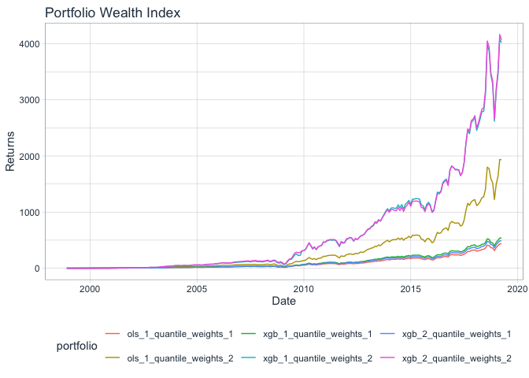
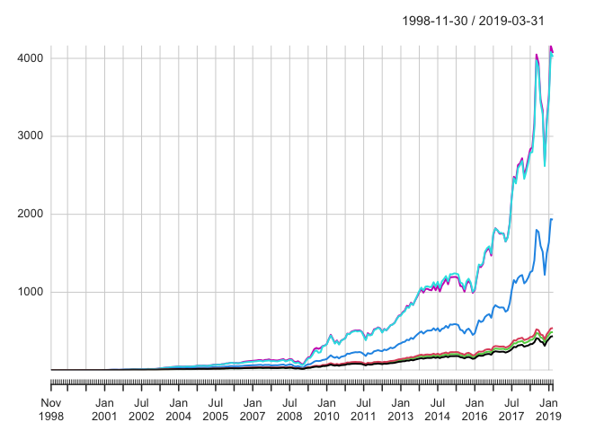
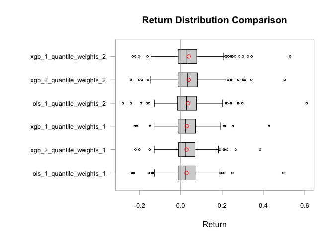

“InvestogatoR” that’s what she said!
The goal of InvestigatoR is to provide a comprehensive toolkit for quantitative finance professionals and researchers to conduct advanced backtesting and portfolio analysis using machine learning models. It offers:
- a streamlined workflow for loading data
- specifying features
- configuring machine learning models
- and analyzing the performance of predictions and portfolio strategies.
This facilitates the evaluation of investment strategies, helping users to optimize returns and manage risks more effectively in their financial models.
It allows the user to retrieve:
-
backtesting()a list of results from applying a portfolio mapping function over each out-of-sample date, providing insights into the performance of trading strategies based on specified features and historical data. -
backtesting_returns()a tibble with the stock_id, date and the predicted returns based on Machinelearning that later be used for a trading strategy -
backtesting_portfolios()a portfolio object suitable for further processing with summary or plot for backtesting portfolios given return predictions -
helpers()a tibble with columns training_start, training_end, prediction_start, prediction_end, and prediction_phase -
mappers()a tibble that contains the stock ID, date, and predicted returns. This function acts as a helper to map over indices and apply a specified machine learning model to predict returns, segmenting the data into training and testing sets based on given indices. -
neural_network_predictions()a list containing the trained model, the training history, and the predictions. This function normalizes the feature data, constructs and compiles a neural network model, fits the model to the training data, evaluates its performance on test data, and finally predicts investment decisions (e.g., to invest or not). -
penreg_lasso()a pair of model fits (“fit_lasso” and “fit_ridge”), which are the outcomes of penalized regression models applied to the specified predictor (x_penalized) and response (y_penalized) variables. -
portfolio_objects()a returnPrediction S3 object that organizes stock IDs, dates, actual returns, and placeholders for predictions and errors, facilitating structured tracking and analysis of return predictions. -
random_foreest_predictor()predictions from a random forest model trained on specified features and data, using user-defined settings for the number of trees, node size, sample size, and variables per split. -
returnPredictors()tibble with stock_id, date and pred_return matching the test_data based on the chose of the two primary modeling techniques/functions (“ols_pred()” using an ordinary least squares regression with a choice between a fast implementation with RcppArmadillo or a standard implementation with base R’s lm function or “xgb_pred”()” using an XGBoost model trained with either user-specified settings or default parameters (like learning rate, tree depth, and number of rounds to optimize prediction accuracy)). -
weight_functions()a tibble with stock_id, date, and weights based on predictions with given constraints like “quantile_weights()” where weights are assigned based on quantiles of predictions, allowing for configurations such as allowing short sales, specifying maximum and minimum weights for individual stocks, and adjusting the total weight in long and short positions or “ensemble_weights()”, where weights are calculated using different methods such as a simple average of predictions, a weighted average based on the inverse of average errors, or using the covariance of prediction errors to determine the weighting scheme. -
InvestigatoR-package()a package that provides a comprehensive toolkit for quantitative finance professionals and researchers to conduct advanced backtesting and portfolio analysis using machine learning models.
Installation
You can install the development version of InvestigatoR from GitHub with:
# install.packages("devtools")
devtools::install_github("ericschumann12/InvestigatoR")Package Usage
This is a basic example which shows you how to solve a common problem:
First we load the InvestigatoR-package and the tidyverse-package:
library(InvestigatoR)
#> Registered S3 method overwritten by 'quantmod':
#> method from
#> as.zoo.data.frame zoo
library(tidyverse)
#> ── Attaching core tidyverse packages ──────────────────────── tidyverse 2.0.0 ──
#> ✔ dplyr 1.1.4 ✔ readr 2.1.5
#> ✔ forcats 1.0.0 ✔ stringr 1.5.1
#> ✔ ggplot2 3.5.1 ✔ tibble 3.2.1
#> ✔ lubridate 1.9.3 ✔ tidyr 1.3.1
#> ✔ purrr 1.0.2
#> ── Conflicts ────────────────────────────────────────── tidyverse_conflicts() ──
#> ✖ dplyr::filter() masks stats::filter()
#> ✖ dplyr::lag() masks stats::lag()
#> ℹ Use the conflicted package (<http://conflicted.r-lib.org/>) to force all conflicts to become errors
## basic example codeNext we load the complimentary dataset that comes with the package:
data("data_ml")
data_ml |> distinct(date) |> pull(date) |> min()
#> [1] "1998-11-30"
data_ml |> distinct(date) |> pull(date) |> max()
#> [1] "2019-03-31"For a description, see…. The original datset was provided by Guillaume Coqueret and Tony Guida with their book Machine Learning for Factor Investing.
Next we specify the set of features that should be used for return prediction, specify some options for backtesting, such as whether the return prediction should be done with a rolling window (TRUE), the window size (“5 years”), the step size(“3 months”, this means, how often do we reestimate the ML model), the offset (“1 year” to avoid any form of data spillage).
return_label <- "R1M_Usd"
features <- c("Div_Yld", "Eps", "Mkt_Cap_12M_Usd", "Mom_11M_Usd", "Ocf", "Pb", "Vol1Y_Usd")
rolling <- FALSE; window_size= "5 years"; step_size = "1 months"; offset = "1 month"; in_sample = TRUENext we specify the machine learning configuration. We can specify multiple configurations, for example, one for a linear regression model and one for a gradient boosting model. The configuration for the linear regression model is empty, as we use the default configuration. The configuration for the gradient boosting model specifies the number of rounds, the maximum depth of the trees, the learning rate, and the objective function. Other functions still need to be implemented.
ml_config <- list(ols_pred = list(pred_func="ols_pred", config=list()),
xgb_pred = list(pred_func="xgb_pred",
config1=list(nrounds=10, max_depth=3, eta=0.3, objective="reg:squarederror"),
config2=list(nrounds=10, max_depth=3, eta=0.1, objective="reg:squarederror")))Finally, we call the backtesting function. The function returns a data frame with the backtesting results. The data frame contains the following columns: date, return_label, features, rolling, window_size, step_size, offset, in_sample, ml_config, model, predicted returns, actual realized returns, and errors for all predictions. The model column contains the name of the model that was used for the prediction. The prediction column contains the predicted returns. The actual column contains the actual returns. The error column contains the difference between the predicted and the actual returns.
rp <- backtesting_returns(data=data_ml, return_prediction_object=NULL,
return_label, features, rolling=FALSE, window_size, step_size, offset, in_sample, ml_config, append=FALSE, num_cores=NULL)
#> Currently processing model 1 of 2
#> Specifically processing config 1 of 1
#> Currently processing model 2 of 2
#> Specifically processing config 1 of 2
#> Warning: UNRELIABLE VALUE: Future ('<none>') unexpectedly generated random
#> numbers without specifying argument 'seed'. There is a risk that those random
#> numbers are not statistically sound and the overall results might be invalid.
#> To fix this, specify 'seed=TRUE'. This ensures that proper, parallel-safe
#> random numbers are produced via the L'Ecuyer-CMRG method. To disable this
#> check, use 'seed=NULL', or set option 'future.rng.onMisuse' to "ignore".
#> Specifically processing config 2 of 2
#> Warning: UNRELIABLE VALUE: Future ('<none>') unexpectedly generated random
#> numbers without specifying argument 'seed'. There is a risk that those random
#> numbers are not statistically sound and the overall results might be invalid.
#> To fix this, specify 'seed=TRUE'. This ensures that proper, parallel-safe
#> random numbers are produced via the L'Ecuyer-CMRG method. To disable this
#> check, use 'seed=NULL', or set option 'future.rng.onMisuse' to "ignore".Next we take this predictions and analyse thbeir statistical properties
rp$predictions |> head()
#> # A tibble: 6 × 5
#> stock_id date ols_1 xgb_1 xgb_2
#> <int> <date> <dbl> <dbl> <dbl>
#> 1 13 2006-12-31 0.0305 0.0402 0.191
#> 2 13 2007-01-31 0.0308 0.0397 0.191
#> 3 13 2007-02-28 0.0300 0.0439 0.193
#> 4 17 2015-03-31 0.0336 0.110 0.223
#> 5 17 2015-04-30 0.0343 0.0734 0.222
#> 6 17 2015-05-31 0.0344 0.0987 0.214
rp_stats <- summary(rp)
print(rp_stats)
#> MSE RMSE MAE Hit_Ratio
#> ols_1 0.03158888 0.1777326 0.08071823 0.5352989
#> xgb_1 0.03142746 0.1772779 0.08193929 0.5529501
#> xgb_2 0.06060931 0.2461896 0.1848615 0.5525796Next, we map those predictions into various portfolios (quantiles) and analyse their performance. We specify various weight restrictions, such as the minimum and maximum weight, the minimum and maximum cutoff quantile, and the b parameter that adjusts the amount of investment per leg (b=1 means, we go 100% long and short). We also specify the predictions that should be used for the portfolio formation (e.g., ols_1, xgb_1, xgb_2).
pf_config <- list(predictions = c("ols_1","xgb_1","xgb_2"),
quantile_weight = list(pred_func="quantile_weights",
config1=list(quantiles = list(long = 0.20, short = 0.20),allow_short_sale = FALSE,
min_weight = -1, max_weight = 1, b = 1),
config2=list(quantiles = list(long = 0.10, short = 0.10),allow_short_sale = FALSE,
min_weight = -1, max_weight = 1, b = 1)))Finally we run the portfolio formation process.
pf <- backtesting_portfolios(return_prediction_object = rp, pf_config = pf_config)
#> Currently processing weight model 1 of 1
#> Specifically processing config 1 of 2
#> Specifically processing config 2 of 2Let us check the content of pf, and calculate some summary statistics
pf$weights |> head()
#> # A tibble: 6 × 8
#> stock_id date ols_1_quantile_weights_1 xgb_1_quantile_weights_1
#> <int> <date> <dbl> <dbl>
#> 1 13 2006-12-31 0.00418 0.00418
#> 2 13 2007-01-31 0.00418 0.00418
#> 3 13 2007-02-28 0.00418 0.00418
#> 4 17 2015-03-31 0.00418 0.00418
#> 5 17 2015-04-30 0.00418 0.00418
#> 6 17 2015-05-31 0.00418 0.00418
#> # ℹ 4 more variables: xgb_2_quantile_weights_1 <dbl>,
#> # ols_1_quantile_weights_2 <dbl>, xgb_1_quantile_weights_2 <dbl>,
#> # xgb_2_quantile_weights_2 <dbl>
pf$portfolio_returns |> head()
#> # A tibble: 6 × 7
#> date ols_1_quantile_weights_1 xgb_1_quantile_weights_1
#> <date> <dbl> <dbl>
#> 1 2006-12-31 0.0184 0.0171
#> 2 2007-01-31 0.0189 0.0177
#> 3 2007-02-28 0.0160 0.0166
#> 4 2015-03-31 -0.0000879 -0.00412
#> 5 2015-04-30 0.00680 0.00849
#> 6 2015-05-31 -0.00671 -0.0102
#> # ℹ 4 more variables: xgb_2_quantile_weights_1 <dbl>,
#> # ols_1_quantile_weights_2 <dbl>, xgb_1_quantile_weights_2 <dbl>,
#> # xgb_2_quantile_weights_2 <dbl>
pf_stats <- summary(pf)
print(pf_stats)
#> # A tibble: 6 × 6
#> portfolio mean sd SR VaR_5 turnover
#> <chr> <dbl> <dbl> <dbl> <dbl> <dbl>
#> 1 ols_1_quantile_weights_1 0.0280 0.0773 0.362 -0.0905 93.7
#> 2 ols_1_quantile_weights_2 0.0352 0.0904 0.389 -0.0995 120.
#> 3 xgb_1_quantile_weights_1 0.0287 0.0753 0.382 -0.0915 110.
#> 4 xgb_1_quantile_weights_2 0.0385 0.0937 0.411 -0.105 135.
#> 5 xgb_2_quantile_weights_1 0.0282 0.0733 0.385 -0.0855 90.1
#> 6 xgb_2_quantile_weights_2 0.0383 0.0904 0.424 -0.0916 118.Alternatively, we can also calculate statistics from the PerformanceAnalytics package.
library(tidyquant)
#> Loading required package: PerformanceAnalytics
#> Loading required package: xts
#> Loading required package: zoo
#>
#> Attaching package: 'zoo'
#> The following objects are masked from 'package:base':
#>
#> as.Date, as.Date.numeric
#>
#> Attaching package: 'xts'
#> The following objects are masked from 'package:dplyr':
#>
#> first, last
#>
#> Attaching package: 'PerformanceAnalytics'
#> The following object is masked from 'package:graphics':
#>
#> legend
#> Loading required package: quantmod
#> Loading required package: TTR
# tidyquant::tq_performance_fun_options()
summary(pf)
#> # A tibble: 6 × 6
#> portfolio mean sd SR VaR_5 turnover
#> <chr> <dbl> <dbl> <dbl> <dbl> <dbl>
#> 1 ols_1_quantile_weights_1 0.0280 0.0773 0.362 -0.0905 93.7
#> 2 ols_1_quantile_weights_2 0.0352 0.0904 0.389 -0.0995 120.
#> 3 xgb_1_quantile_weights_1 0.0287 0.0753 0.382 -0.0915 110.
#> 4 xgb_1_quantile_weights_2 0.0385 0.0937 0.411 -0.105 135.
#> 5 xgb_2_quantile_weights_1 0.0282 0.0733 0.385 -0.0855 90.1
#> 6 xgb_2_quantile_weights_2 0.0383 0.0904 0.424 -0.0916 118.
summary(pf, type = "table.AnnualizedReturns")
#> Warning: Non-numeric columns being dropped: date
#> Using column `date` for date_var.
#> ols_1_quantile_weights_1 xgb_1_quantile_weights_1
#> Annualized Return 0.3470 0.3611
#> Annualized Std Dev 0.2678 0.2607
#> Annualized Sharpe (Rf=0%) 1.2959 1.3849
#> xgb_2_quantile_weights_1 ols_1_quantile_weights_2
#> Annualized Return 0.3544 0.4486
#> Annualized Std Dev 0.2538 0.3132
#> Annualized Sharpe (Rf=0%) 1.3963 1.4323
#> xgb_1_quantile_weights_2 xgb_2_quantile_weights_2
#> Annualized Return 0.5015 0.5024
#> Annualized Std Dev 0.3247 0.3133
#> Annualized Sharpe (Rf=0%) 1.5447 1.6036
summary(pf, type = "table.Distributions")
#> Warning: Non-numeric columns being dropped: date
#> Using column `date` for date_var.
#> ols_1_quantile_weights_1 xgb_1_quantile_weights_1
#> monthly Std Dev 0.0773 0.0753
#> Skewness 0.7575 0.5217
#> Kurtosis 8.7266 6.4319
#> Excess kurtosis 5.7266 3.4319
#> Sample skewness 0.7669 0.5281
#> Sample excess kurtosis 5.8701 3.5278
#> xgb_2_quantile_weights_1 ols_1_quantile_weights_2
#> monthly Std Dev 0.0733 0.0904
#> Skewness 0.4446 1.0366
#> Kurtosis 5.7883 9.9508
#> Excess kurtosis 2.7883 6.9508
#> Sample skewness 0.4501 1.0495
#> Sample excess kurtosis 2.8709 7.1197
#> xgb_1_quantile_weights_2 xgb_2_quantile_weights_2
#> monthly Std Dev 0.0937 0.0904
#> Skewness 0.8782 0.8076
#> Kurtosis 6.5942 6.4552
#> Excess kurtosis 3.5942 3.4552
#> Sample skewness 0.8890 0.8175
#> Sample excess kurtosis 3.6935 3.5517
summary(pf, type = "table.DownsideRisk")
#> Warning: Non-numeric columns being dropped: date
#> Using column `date` for date_var.
#> ols_1_quantile_weights_1 xgb_1_quantile_weights_1
#> Semi Deviation 0.0515 0.0506
#> Gain Deviation 0.0605 0.0578
#> Loss Deviation 0.0479 0.0451
#> Downside Deviation (MAR=10%) 0.0420 0.0406
#> Downside Deviation (Rf=0%) 0.0385 0.0370
#> Downside Deviation (0%) 0.0385 0.0370
#> Maximum Drawdown 0.5227 0.5017
#> Historical VaR (95%) -0.0905 -0.0915
#> Historical ES (95%) -0.1353 -0.1291
#> Modified VaR (95%) -0.0725 -0.0781
#> Modified ES (95%) -0.0725 -0.0989
#> xgb_2_quantile_weights_1 ols_1_quantile_weights_2
#> Semi Deviation 0.0495 0.0583
#> Gain Deviation 0.0559 0.0737
#> Loss Deviation 0.0441 0.0540
#> Downside Deviation (MAR=10%) 0.0397 0.0455
#> Downside Deviation (Rf=0%) 0.0361 0.0421
#> Downside Deviation (0%) 0.0361 0.0421
#> Maximum Drawdown 0.4732 0.5624
#> Historical VaR (95%) -0.0855 -0.0995
#> Historical ES (95%) -0.1262 -0.1486
#> Modified VaR (95%) -0.0785 -0.0722
#> Modified ES (95%) -0.1049 -0.0722
#> xgb_1_quantile_weights_2 xgb_2_quantile_weights_2
#> Semi Deviation 0.0597 0.0583
#> Gain Deviation 0.0775 0.0736
#> Loss Deviation 0.0519 0.0502
#> Downside Deviation (MAR=10%) 0.0448 0.0437
#> Downside Deviation (Rf=0%) 0.0414 0.0402
#> Downside Deviation (0%) 0.0414 0.0402
#> Maximum Drawdown 0.5167 0.4836
#> Historical VaR (95%) -0.1053 -0.0916
#> Historical ES (95%) -0.1463 -0.1427
#> Modified VaR (95%) -0.0838 -0.0820
#> Modified ES (95%) -0.0937 -0.0936
summary(pf, type = "table.DrawdownsRatio")
#> Warning: Non-numeric columns being dropped: date
#> Using column `date` for date_var.
#> ols_1_quantile_weights_1 xgb_1_quantile_weights_1
#> Sterling ratio 0.5572 0.6002
#> Calmar ratio 0.6638 0.7198
#> Burke ratio 0.4231 0.4543
#> Pain index 0.0374 0.0357
#> Ulcer index 0.0861 0.0830
#> Pain ratio 9.2826 10.1193
#> Martin ratio 4.0290 4.3518
#> xgb_2_quantile_weights_1 ols_1_quantile_weights_2
#> Sterling ratio 0.6183 0.6772
#> Calmar ratio 0.7490 0.7976
#> Burke ratio 0.4630 0.5027
#> Pain index 0.0326 0.0365
#> Ulcer index 0.0753 0.0901
#> Pain ratio 10.8872 12.2911
#> Martin ratio 4.7070 4.9791
#> xgb_1_quantile_weights_2 xgb_2_quantile_weights_2
#> Sterling ratio 0.8132 0.8609
#> Calmar ratio 0.9706 1.0390
#> Burke ratio 0.5724 0.5918
#> Pain index 0.0373 0.0350
#> Ulcer index 0.0873 0.0809
#> Pain ratio 13.4421 14.3659
#> Martin ratio 5.7468 6.2130
summary(pf, type = "cov")
#> Warning: Non-numeric columns being dropped: date
#> Using column `date` for date_var.
#> ols_1_quantile_weights_1 xgb_1_quantile_weights_1
#> ols_1_quantile_weights_1 0.005974579 0.005773093
#> xgb_1_quantile_weights_1 0.005773093 0.005664717
#> xgb_2_quantile_weights_1 0.005595153 0.005481785
#> ols_1_quantile_weights_2 0.006771307 0.006538059
#> xgb_1_quantile_weights_2 0.006981303 0.006848935
#> xgb_2_quantile_weights_2 0.006657444 0.006564361
#> xgb_2_quantile_weights_1 ols_1_quantile_weights_2
#> ols_1_quantile_weights_1 0.005595153 0.006771307
#> xgb_1_quantile_weights_1 0.005481785 0.006538059
#> xgb_2_quantile_weights_1 0.005368910 0.006328466
#> ols_1_quantile_weights_2 0.006328466 0.008175970
#> xgb_1_quantile_weights_2 0.006637890 0.008148268
#> xgb_2_quantile_weights_2 0.006366076 0.007930356
#> xgb_1_quantile_weights_2 xgb_2_quantile_weights_2
#> ols_1_quantile_weights_1 0.006981303 0.006657444
#> xgb_1_quantile_weights_1 0.006848935 0.006564361
#> xgb_2_quantile_weights_1 0.006637890 0.006366076
#> ols_1_quantile_weights_2 0.008148268 0.007930356
#> xgb_1_quantile_weights_2 0.008785115 0.008292291
#> xgb_2_quantile_weights_2 0.008292291 0.008180366Now we plot the corresponding cumulative returns of the portfolios
plot(pf)
Alternatively, the plotting function is designed in a way, that it takes plotting function from the tidyquant package as inputs.
library(tidyquant)
ls("package:PerformanceAnalytics")[grepl("chart",ls("package:PerformanceAnalytics"))]
#> [1] "chart.ACF" "chart.ACFplus"
#> [3] "chart.Bar" "chart.BarVaR"
#> [5] "chart.Boxplot" "chart.CaptureRatios"
#> [7] "chart.Correlation" "chart.CumReturns"
#> [9] "chart.Drawdown" "chart.ECDF"
#> [11] "chart.Events" "chart.Histogram"
#> [13] "chart.QQPlot" "chart.Regression"
#> [15] "chart.RelativePerformance" "chart.RiskReturnScatter"
#> [17] "chart.RollingCorrelation" "chart.RollingMean"
#> [19] "chart.RollingPerformance" "chart.RollingQuantileRegression"
#> [21] "chart.RollingRegression" "chart.Scatter"
#> [23] "chart.SnailTrail" "chart.StackedBar"
#> [25] "chart.TimeSeries" "chart.VaRSensitivity"
#> [27] "charts.Bar" "charts.BarVaR"
#> [29] "charts.PerformanceSummary" "charts.RollingPerformance"
#> [31] "charts.RollingRegression" "charts.TimeSeries"
plot(pf, type = "chart.CumReturns")
#> Using column `date` for date_var.
plot(pf, type = "charts.PerformanceSummary")
#> Using column `date` for date_var.
plot(pf, type = "chart.Boxplot")
#> Using column `date` for date_var.
Author/License
- Investigator Team and Ass.-Prof. Dr. Sebastian Stöckl - Package Creator, Modifier & Maintainer - sstoeckl on github
This project is licensed under the MIT License - see the <license.md> file for details</license.md>